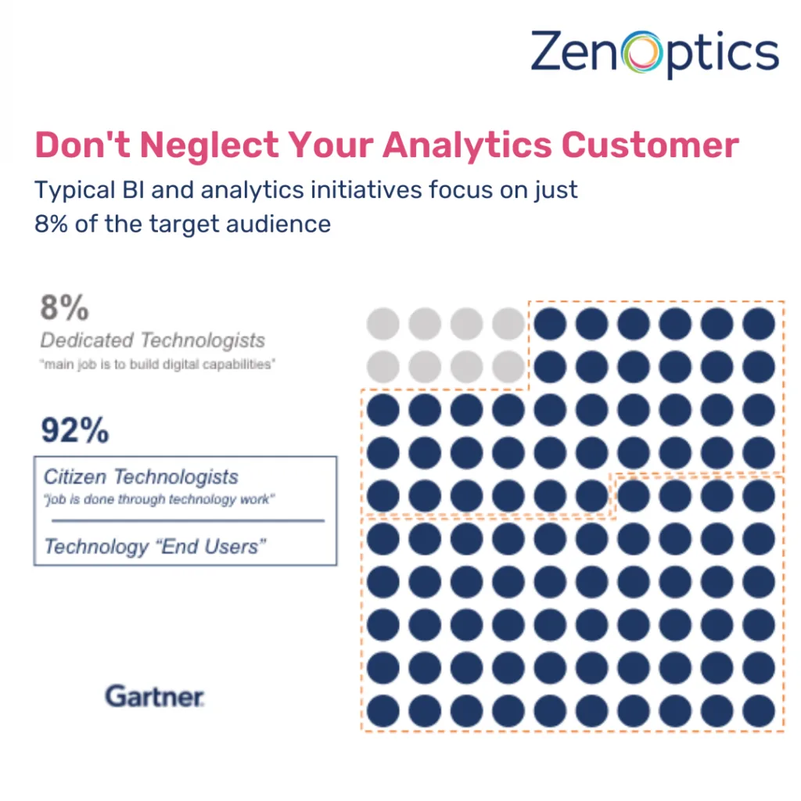

Key Takeaways
- BI and analytics typically focus heavily on tech folks.
- Organizations need to see any person who has to make a business decision as a viable user of analyzed data - the analytics consumer.
- Establishing a UX that facilitates the discovery, composition, and promotion of analytics assets supports the way people work.
Could you deliver even more value with the analytics assets you already have in place?
The answer for many organizations is “yes.” And a logical place to start is by enabling more people throughout your organization to make decisions based on data and analytics. It’s a relatively simple model: put more resources into the hands of people who are responsible for the majority of day-to-day decisions and your organization will be situated for amplified impact.
Yet research shows that BI and analytics typically focus heavily on tech folks. In fact, Gartner shows that most initiatives focus on dedicated technologists – ignoring up to 92% of the organization’s potential users.

Many organizations try to address this through self-service, but instituting a self-service program is not enough. These initiatives commonly open up the tools to more users – which is a great start, but extending the openness of a tool or platform does not guarantee increased use. Why? Because these tools are typically not designed for the casual user. Further, multiple tools are often required for a single purpose in order to understand the analytics and the underlying context. Organizations must consider what is necessary to not only allow these users to work with analytics, but to empower them.
In short, organizations need to see any person who has to make a business decision as a viable user of analyzed data – the analytics consumer. Only when they have a clear understanding of this new persona can they align the right resources to their needs. The result will be enabled, empowered people who are focused on business outcomes.
Identify and Understand your Analytics Consumers
As a best practice, when considering how to best set someone up for success, it is important to look at things through their perspective and understand their motivations, challenges, and the way they work. Analytics consumers are not the same as data folks – they have different roles, different needs, and are focused on different business outcomes. As such, It’s important to understand the unique needs of this group. What roles are these people in? What reporting/analytics needs do they have? Who do they need to collaborate with? How quickly must they have information – and make decisions based on it?
Let’s consider some of the traits of these analytics consumers are:
- Diverse: These people may work in finance, sales, supply chain, customer support, operations, etc.
- Varied in skills: Expertise may reside with domain knowledge, and they may have varying degrees of analytical and technical aptitude
- Distributed geographically: Their primary location may be a home, office, store, branch, operations center, warehouse, manufacturing, client location, etc. – or a mix of two or more of these.
- Dependent on context: Much of their focus is oriented in the broader context of processes and applications
- Habitual or confined: Because of the specific needs of specific roles, these people have learned to operate with legacy processes and their preferred tools
- Time-pressed: They need to make decisions and act quickly; this limits the time available for embracing new technologies
- Collaborative: They work with many internal and external constituents
Considering these traits, how do you empower this diverse set of people with requirements and skills unique to their particular business roles?
First, allow users to work with the tools that meet their needs. Different BI and analytics tools are suited for different purposes. Your finance department lives in Excel, while other people consider it a necessary evil and prefer to view and assess information visually, perhaps in Tableau. Some people prefer a dashboard overview, while others want to drill into the details and mine for finer grain insights. You can empower them by simplifying their experience and allowing them to work with what is most natural and/or appropriate for their needs.
Second, allow people to seek further understanding and context if they wish. Some people can’t – or don’t want to – take information at face value. Fundamentally, analytics consumers are a procurement person, a salesperson, or a marketing person first. They need to see the analytics organized in the context of what they are trying to do – whether it is quarter close, a new customer proposal, or generating a new campaign. Here is where they have to make decisions, and this is where analytics metadata and context come in for not only common, standardized understanding but to provide an additional level of confidence in the information. Further, if there’s a question about the report/asset, the analytics consumer should easily be able to identify who the business owner of that asset may be to reach out quickly for more detail.
Third, despite how independently people may work, they usually do not work in isolation. The analytics they discover and use will be valuable to others as well. It is important to facilitate collaboration, sharing, and easy communication surrounding each of these analytics assets – or groups of assets – to scale the impact and support the decision-making process.
Align Resources with Peoples’ Needs
Empowering people with resources is not just about technology. To truly meet the needs of your analytics consumers, you need to establish a user experience that facilitates the discovery, composition, and promotion of analytics assets in intuitive ways that align to support the way people work.
Simplify Discovery and Access of assets: Often organizations think that because an individual has permissions in a tool that he or she will have everything they need. Yet that is generally not the case. One of our customers conducted a survey of their users and found that less than 20% were confident in the available current reporting and how to access it. Just because someone has access does not mean they are able to quickly assess which underlying tool they should go to for the information they need, nor that they will be able to easily identify the appropriate analytic asset for their use. Organizations can benefit from providing a single place for trusted assets to be accessed – regardless of the underlying tool or platform – so analytics consumers can quickly find and open the report, dashboard, spreadsheet, or PDF they need to do their daily work.
Compose analytics flows: Many analytics consumers have certain recurring report-related business processes they follow. For instance, end-of-month reporting will include individual reports from different regions, divisions, etc. These consumers see the analytics in the context of the processes or flows – and these processes require multiple assets and multiple sources (tools). Creating cross-platform analytics workflows can allow these people to quickly launch the series of analytics assets they need to accomplish their work. Even if it is as simple as reports that are discussed in a weekly meeting, a workflow including all the reports – ordered in the sequence of discussion – can save time and energy. More importantly, it can ensure the team and stakeholders are all working from the same information.
Scale the impact of the analytics: Providing a simple, intuitive experience for analytics consumers, sets the stage for resources to be shared and consistently, appropriately used across teams and business units. People need to collaborate to support and substantiate their decisions. And when they need more information, they need to be able to easily search for more assets, dig into the context (the analytics metadata) of the report, and mine for further intelligence.
Ultimately, by enabling more diverse users with analytics, they will be better positioned to move your business forward. ZenOptics provides an intuitive user experience for analytics consumers to easily find and use analytics in support of their daily work. Learn how by requesting a personalized demo.
Written by ZenOptics Sr. Manager, Product Marketing. Julie Langenkamp